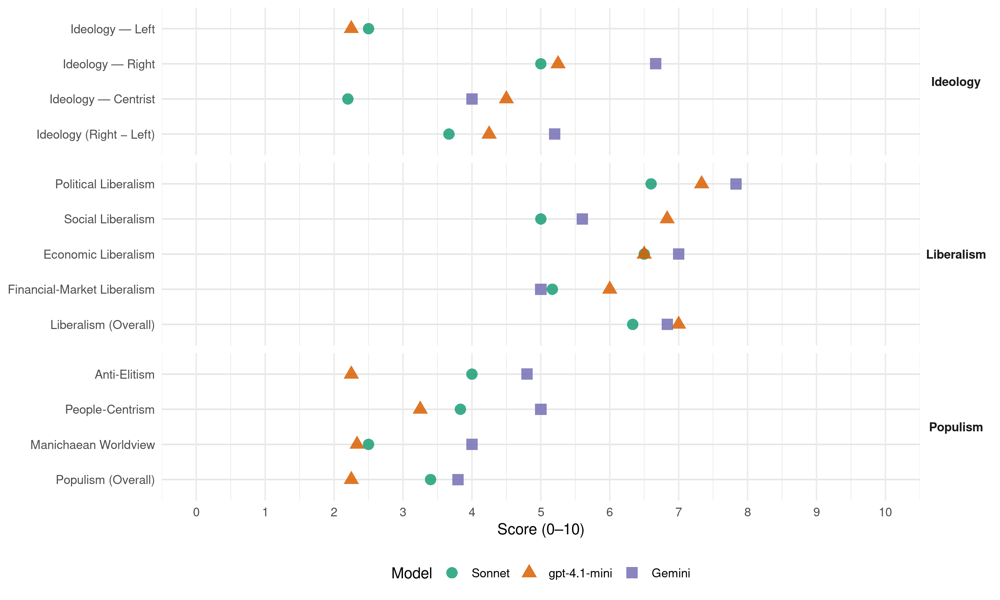

ADR (Luxembourg, 2013)
manifesto_id 23951_201310
Get full text: This site shows derived annotations and short verbatim quotes only. The full manifesto text is © Manifesto Project / WZB — obtain it via manifesto-project.wzb.eu using the manifesto_id above.
Headline scores
| Dimension | Sonnet | gpt-4.1-mini | Gemini |
|---|---|---|---|
| Populism (Overall) | 3.4 | 2.2 | 3.8 |
| Anti-Elitism | 4.0 | 2.2 | 4.8 |
| People-Centrism | 3.8 | 3.2 | 5.0 |
| Manichaean Worldview | 2.5 | 2.3 | 4.0 |
| Ideology (Right − Left) | 3.7 | 4.2 | 5.2 |
| Liberalism (Overall) | 6.3 | 7.0 | 6.8 |
| Political Liberalism | 6.6 | 7.3 | 7.8 |
| Social Liberalism | 5.0 | 6.8 | 5.6 |
| Economic Liberalism | 6.5 | 6.5 | 7.0 |
| Financial-Market Liberalism | 5.2 | 6.0 | 5.0 |
Evidence per dimension
Economic Liberalism
Gemini · score 8.0 · verified · chunk 1
“Gesellschaftsmodell der sozialen Marktwirtschaft muss weiter gelten”
den wirklich Hilfsbedürftigen solidarisch zur Seite zu stehen. Das Gesellschaftsmodell der sozialen Marktwirtschaft muss weiter gelten.
Gemini · score 8.0 · verified · chunk 2
“Bedingungen der freien Markwirtschaft – zu der die ADR sich bekennt”
Dieses ist unter den Bedingungen der freien Markwirtschaft – zu der die ADR sich bekennt – hauptsächlich über die Steigerung des Angebots zu erreichen.
Gemini · score 8.0 · verified · chunk 3
“zueinander in freie Konkurrenz zu bringen”
Sachen Finanzierung auf eine Ebene zu stellen, um sie zueinander in freie Konkurrenz zu bringen. Für die Infrastrukturkosten ist eine einheitliche
Gemini · score 8.0 · verified · chunk 4
“optimale Entwicklung der Privatwirtschaft”
sondern auch eine wichtige Voraussetzung für eine optimale Entwicklung der Privatwirtschaft . Die öffentliche Funktion soll innovativ, dynamisch und
Gemini · score 7.0 · verified · chunk 5
“Privatwirtschaft, insbesondere die Klein-und Mittelbetriebe, sollen somit administrativ entlastet”
Sehr viel konsequenter als die bisherigen Regierungsparteien wird die ADR die Gesetze „entschlacken“ und überflüssige Bürokratie bekämpfen. Die Privatwirtschaft, insbesondere die Klein-und Mittelbetriebe, sollen somit administrativ entlastet werden. Die „simplification administrative“ wird zu einer Priorität der Regierungsarbeit.
Gemini · score 3.0 · verified · chunk 6
“wehrt sich gegen ultra-liberale Vorstellungen”
Auch wehrt sich die ADR gegen ultra-liberale Vorstellungen, die alle möglichen Dienstzweige liberalisieren und privatisieren wollen.
gpt-4.1-mini · score 8.0 · verified · chunk 1
“Das Gesellschaftsmodell der sozialen Marktwirtschaft muss weiter gelten”
…Das Gesellschaftsmodell der sozialen Marktwirtschaft muss weiter gelten. Damit die soziale Komponente dieses Gesellschaftsmodells sich aber voll entfalten kann, muss zuerst eine hohe, wirtschaftliche Leistung erbracht werden. Sozialpolitik kann daher nie gegen die Wirtschaftsinteressen entworfen werden…
gpt-4.1-mini · score 6.0 · verified · chunk 2
“Die ADR bekennt sich zum Grundprinzip des elterlichen Sorgerechts”
Die ADR bekennt sich zum Grundprinzip des elterlichen Sorgerechts (autorité parentale). Der Staat darf sich in dieses elterliche Erziehungs-und Sorgevorrecht nur in seltenen und gut begründeten Ausnahmefällen einmischen.
gpt-4.1-mini · score 6.0 · verified · chunk 3
“Die Neuordnung der Studienbeihilfen darf auf keinen Fall die luxemburgischen Studenten gegenüber anderen benachteiligen”
…Die Neuordnung der Studienbeihilfen darf auf keinen Fall die luxemburgischen Studenten gegenüber anderen benachteiligen, egal ob sie in Luxemburg oder im Ausland leben…
gpt-4.1-mini · score 7.0 · verified · chunk 4
“Die ADR unterstreicht den Wert einer unabhängigen und gut funktionierenden öffentlichen Funktion im Dienst des Staates und seiner Bürger.”
Fir en effizienten ëffentlechen Déngscht Die ADR unterstreicht den Wert einer unabhängigen und gut funktionierenden öffentlichen Funktion im Dienst des Staates und seiner Bürger. Sie ist überzeugt, dass ein effizienter Staatsapparat nicht nur eine wesentliche Stütze der nationalen Souveränität ist, sondern auch eine wichtige Voraussetzung für eine optimale Entwicklung der Privatwirtschaft.
gpt-4.1-mini · score 6.0 · verified · chunk 5
“Die Privatwirtschaft, insbesondere die Klein-und Mittelbetriebe, sollen somit administrativ entlastet werden”
Sehr viel konsequenter als die bisherigen Regierungsparteien wird die ADR die Gesetze „entschlacken“ und überflüssige Bürokratie bekämpfen. Die Privatwirtschaft, insbesondere die Klein-und Mittelbetriebe, sollen somit administrativ entlastet werden.
gpt-4.1-mini · score 6.0 · verified · chunk 6
“Die ADR setzt sich dafür ein, dass der Staat auch weiterhin eine starke Rolle in der luxemburgischen Wirtschaft spielt.”
…Die ADR setzt sich dafür ein, dass der Staat auch weiterhin eine starke Rolle in der luxemburgischen Wirtschaft spielt. Lebenswichtige Güter, wie zum Beispiel Wasser, dürfen keinesfalls privatisiert werden…
Sonnet · score 7.0 · verified · chunk 1
“Wettbewerbsfähigkeit der in Luxemburg angesiedelten Unternehmen darf nicht durch Steuererhöhungen untergraben werden”
Die ADR plant keinerlei Steuererhöhungen, also ausdrücklich auch keine für die Wirtschaft. Die Wettbewerbsfähigkeit der in Luxemburg angesiedelten Unternehmen darf nicht durch Steuererhöhungen untergraben werden.
Sonnet · score 6.0 · verified · chunk 2
“freien Markwirtschaft – zu der die ADR sich bekennt”
Dieses ist unter den Bedingungen der freien Markwirtschaft – zu der die ADR sich bekennt – hauptsächlich über die Steigerung des Angebots zu erreichen.
Sonnet · score 6.0 · verified · chunk 3
“natürliche Konkurrenz, wie sie überall in der freien Marktwirtschaft”
Es entsteht eine natürliche Konkurrenz, wie sie überall in der freien Marktwirtschaft anzutreffen ist. Die Schulen dürfen eigene Aufnahmeprüfungen
Sonnet · score 7.0 · verified · chunk 4
“Privatwirtschaft, insbesondere die Klein-und Mittelbetriebe”
Die Privatwirtschaft, insbesondere die Klein-und Mittelbetriebe, sollen somit administrativ entlastet werden. Die ‘simplification administrative’ wird zu einer Priorität der Regierungsarbeit.
Sonnet · score 4.0 · mixed · chunk 6
“ultra-liberale Vorstellungen, die alle möglichen Dienstzweige liberalisieren”
Auch wehrt sich die ADR gegen ultra-liberale Vorstellungen, die alle möglichen Dienstzweige liberalisieren und privatisieren wollen. Die Erfahrung zeigt, dass solche Bestrebungen oft mehr Nachteile als Vorteile bringen.
Financial-Market Liberalism
Gemini · score 5.0 · mixed · chunk 1
“nicht teilweise in Spekulationsprodukte investiert werden dürfen”
Die ADR spricht sich erneut dagegen aus, dass die im Rahmen dieses Gesetzes angelegten Gelder auch nur teilweise in Spekulationsprodukte investiert werden dürfen.
Gemini · score 3.0 · verified · chunk 2
“teilweise in Spekulationsprodukte investiert werden dürfen”
Die ADR spricht sich erneut dagegen aus, dass die im Rahmen dieses Gesetzes angelegten Gelder auch nur teilweise in Spekulationsprodukte investiert werden dürfen.
Gemini · score 7.0 · verified · chunk 4
“luxemburgische Wirtschaft, Industrie und den Finanzplatz”
Die Universität muss für die luxemburgische Wirtschaft, Industrie und den Finanzplatz ein offener und wertvoller Ansprechpartner sein. Die
gpt-4.1-mini · score 6.0 · verified · chunk 1
“Die ADR möchte die geltende Steuergesetzgebung korrekt und vollständig anwenden”
…Die ADR möchte die geltende Steuergesetzgebung korrekt und vollständig anwenden. Da es ihr Ziel ist, wenn möglich ohne Steuererhöhungen das Budget ins Gleichgewicht zu bekommen, müssen zumindest alle nach der jetzigen Gesetzeslage geschuldeten Steuern erhoben und eingetrieben werden…
gpt-4.1-mini · score 5.0 · mixed · chunk 2
“Die ADR spricht sich erneut dagegen aus, dass die im Rahmen dieses Gesetzes angelegten Gelder auch nur teilweise in Spekulationsprodukte investiert werden dürfen”
Die ADR spricht sich erneut dagegen aus, dass die im Rahmen dieses Gesetzes angelegten Gelder auch nur teilweise in Spekulationsprodukte investiert werden dürfen. Auch ethische Kriterien sollen respektiert werden.
gpt-4.1-mini · score 6.0 · verified · chunk 4
“Die ADR wird systematisch die Verwaltungen dahingehend überprüfen, ob sie staatliche Kernaufgaben erfüllen.”
Fir en effizienten ëffentlechen Déngscht Die ADR wird systematisch die Verwaltungen dahingehend überprüfen, ob sie staatliche Kernaufgaben erfüllen, ob sie nicht mit anderen Dienststellen zusammengelegt werden können oder ob sie umorganisiert werden können. Ziel muss es sein, die Zahl der Bediensteten der öffentlichen Funktion zu stabilisieren und, über natürliche Abgänge, progressiv zu reduzieren.
Sonnet · score 6.0 · verified · chunk 1
“Steuergesetzgebung muss so ausgelegt werden, dass Risikokapital leichter den Firmengründern zur Verfügung gestellt werden kann”
Die Steuergesetzgebung muss so ausgelegt werden, dass Risikokapital leichter den Firmengründern zur Verfügung gestellt werden kann.
Sonnet · score 4.0 · verified · chunk 2
“Spekulationsprodukte investiert werden dürfen”
Die ADR spricht sich erneut dagegen aus, dass die im Rahmen dieses Gesetzes angelegten Gelder auch nur teilweise in Spekulationsprodukte investiert werden dürfen.
Sonnet · score 5.0 · verified · chunk 3
“Finanzierung der Religionsgemeinschaften sollte neu überdacht”
Die Finanzierung der Religionsgemeinschaften sollte neu überdacht werden, damit jeder Bürger frei darüber entscheiden kann, welcher religiösen, philosophischen oder humanitären Institution er seine Unterstützung zukommen lässt
Sonnet · score 6.0 · verified · chunk 4
“Universität und den Finanzplatz ein offener”
Die Universität muss für die luxemburgische Wirtschaft, Industrie und den Finanzplatz ein offener und wertvoller Ansprechpartner sein.
Sonnet · score 6.0 · verified · chunk 5
“Post als einheitliche Struktur mit den drei Geschäftsbereichen”
Die ADR spricht sich dafür aus, die Post als einheitliche Struktur mit den drei Geschäftsbereichen Post, Telekom und Finanzen (Postscheck) zu erhalten.
Sonnet · score 4.0 · verified · chunk 6
“Neugestaltung der Funktionsweise der EZB”
Sie verlangt desgleichen eine Neugestaltung der Funktionsweise der EZB um finanzielle Risiken, die derzeit über das sogenannte Target-System für Luxemburg entstehen zu beseitigen.
Political Liberalism
Gemini · score 8.0 · verified · chunk 1
“Kompetenzen des Rechnungshofs („Cour des Comptes“) werden gestärkt”
Eine Gesamtreduktion der Ausgaben um mindestens 10% ist absolut unerlässlich. Die Kompetenzen des Rechnungshofs („Cour des Comptes“) werden gestärkt.
Gemini · score 8.0 · verified · chunk 2
“Gleichheitsprinzip, das eine tragende Säule des demokratischen Rechtsstaats ist”
Quoten verletzen das Gleichheitsprinzip, das eine tragende Säule des demokratischen Rechtsstaats ist. Sie haben selbst eine diskrimierende Wirkung
Gemini · score 8.0 · verified · chunk 3
“Grundlage der Menschenrechte und des geltenden Rechts”
Ausgleichs, der auf der Grundlage der Menschenrechte und des geltenden Rechts die freie Ausübung der verschiedenen philosophischen
Gemini · score 9.0 · verified · chunk 4
“Freiheit und Demokratie resolut zu verteidigen”
ADR hat sich daher zum Ziel gesetzt, Freiheit und Demokratie resolut zu verteidigen! Die ADR steht für die Freiheit des Einzelnen
Gemini · score 7.0 · verified · chunk 5
“Staat und Gemeinden erhalten ein Informations-und Transparenzgesetz”
Luxemburg muss wieder zum Land der kurzen Wege werden. Die Idee der „cellules de facilitation“ zwischen den Behõrden wird weitergeführt. In den Bereichen, wo man vernünftigerweise binnen ein paar Monaten eine Entscheidung der Behörden erwarten kann, wird das Prinzip eingeführt, dass nach Ablauf einer bestimmten Frist eine erbetene Erlaubnis als gegeben gilt, falls der Staat keine gegenteilige Entscheidung schriftlich und fristgerecht mitgeteilt hat. Staat und Gemeinden erhalten ein Informations-und Transparenzgesetz, das allerdings genauso wenig den Schutz der Privatsphäre in Frage stellt wie die Geheimhaltungspflicht des Staates in Angelegenheiten, die die nationale Sicherheit betreffen.
Gemini · score 7.0 · verified · chunk 6
“Erhaltung eines demokratischen Staatssystems in Freiheit”
Die Verteidigungspolitik soll zur Erhaltung eines demokratischen Staatssystems in Freiheit und Sicherheit beitragen.
gpt-4.1-mini · score 7.0 · verified · chunk 1
“Die ADR will die Zuständigkeiten und Befugnisse des Rechnungshofes bei der Kontrolle der öffentlichen Ausgaben auf sämtliche öffentlichen Einrichtungen sowie die Bezieher von öffentlichen Finanzmitteln und Beihilfen ausweiten”
…Die ADR will die Zuständigkeiten und Befugnisse des Rechnungshofes bei der Kontrolle der öffentlichen Ausgaben auf sämtliche öffentlichen Einrichtungen sowie die Bezieher von öffentlichen Finanzmitteln und Beihilfen ausweiten. Die öffentliche Ausgabenpolitik wird viel strengeren Kontrollen unterzogen…
gpt-4.1-mini · score 7.0 · verified · chunk 2
“Die ADR steht ausdrücklich für eine möglichst umfassende Meinungs-und Redefreiheit”
Die ADR steht ausdrücklich für eine möglichst umfassende Meinungs-und Redefreiheit. Sie steht daher Versuchen, die Medien zu zensieren oder das Kulturgut Sprache nach staatlich verordneten Geschlechterkriterien zu reglementieren, ablehnend gegenüber.
gpt-4.1-mini · score 7.0 · verified · chunk 3
“Der Staat ist weder der alleinige Interessenvertreter der Religionsgemeinschaften”
…Der Staat ist weder der alleinige Interessenvertreter der Religionsgemeinschaften, noch derjenige der Atheisten oder Agnostiker. Er ist vielmehr ein Wahrer des gesellschaftlichen Gesamtinteresses und Ausgleichs, der auf der Grundlage der Menschenrechte und des geltenden Rechts die freie Ausübung der verschiedenen philosophischen oder religiösen Überzeugungen ermöglichen muss…
gpt-4.1-mini · score 9.0 · verified · chunk 4
“Die ADR steht für die Freiheit des Einzelnen, eine lebendige Demokratie und einen starken Rechtstaat.”
De Rechtsstat stäerken Die ADR möchte das Bewusstsein der Bürger für die vielen Probleme rechtsstaatlicher Natur schärfen, die Luxemburg derzeit zu schaffen machen. Die ADR steht für die Freiheit des Einzelnen, eine lebendige Demokratie und einen starken Rechtstaat.
gpt-4.1-mini · score 7.0 · verified · chunk 5
“Die ADR ist der Auffassung, dass die Gesetzestexte sehr viel mehr in koordinierter, vereinfachter und leicht verständlicher Form zur Verfügung stehen müssen”
Der Staat sollte für die Bürger transparent sein. Die ADR ist der Auffassung, dass die Gesetzestexte sehr viel mehr in koordinierter, vereinfachter und leicht verständlicher Form zur Verfügung stehen müssen. Immer weniger Bürger haben noch einen Überblick über die Flut an Gesetzen und anderen staatlichen Verordnungen.
gpt-4.1-mini · score 7.0 · verified · chunk 6
“Die ADR bekennt sich zur europäischen Integration und zu Luxemburgs Mitgliedschaft in der NATO.”
…Die ADR strebt eine aktive Außenpolitik an, um Luxemburgs Beitrag zur internationalen Politik weiterhin zu stärken. Sie bekennt sich zur europäischen Integration und zu Luxemburgs Mitgliedschaft in der NATO. Sie strebt eine konsequente und erfolgreiche Verteidigung der luxemburgischen Interessen sowohl auf bilateraler Ebene als auch in der multilateralen Diplomatie an…
Sonnet · score 7.0 · verified · chunk 1
“Davon kann das demokratische System nur profitieren”
Somit wird dem Bürger und Steuerzahler Gelegenheit gegeben, sich ein begründetes Urteil zu bilden. Davon kann das demokratische System nur profitieren.
Sonnet · score 6.0 · verified · chunk 2
“Quoten verletzen das Gleichheitsprinzip”
Quoten verletzen das Gleichheitsprinzip, das eine tragende Säule des demokratischen Rechtsstaats ist. Sie haben selbst eine diskriminierende Wirkung und sind deshalb nicht akzeptabel.
Sonnet · score 6.0 · verified · chunk 3
“Rede-und Meinungsfreiheit nicht vereinbar”
Dies scheint der ADR mit der Rede-und Meinungsfreiheit nicht vereinbar zu sein. Hingegen spricht sich die ADR für ein explizites Verbot von Hasspredigten aus
Sonnet · score 8.0 · verified · chunk 4
“Pressefreiheit, die Unschuldsvermutung vor Gericht”
Daher gelten für sie klare politische Richtlinien, wie zum Beispiel die unbedingte Achtung der Menschenrechte, der Respekt der Privatsphäre durch den Staat, der Datenschutz, die Pressefreiheit, die Unschuldsvermutung vor Gericht, die Verhältnismäßigkeit des staatlichen Handelns
Sonnet · score 6.0 · verified · chunk 5
“Souveränität Luxemburgs gegenüber den europäischen Institutionen”
Die ADR wird darauf achten, dass die Souveränität Luxemburgs gegenüber den europäischen Institutionen vollständig wiederhergestellt wird.
Sonnet · score 6.0 · mixed · chunk 6
“parlamentarische Kontrolle des Geheimdienstes”
Sie spricht sich gleichzeitig für ein neues Geheimdienstgesetz aus, das wichtige Aspekte, wie zum Beispiel die parlamentarische Kontrolle des Geheimdienstes, präzise regelt.
Liberalism (Overall)
Gemini · score 7.0 · verified · chunk 1
“Gesellschaftsmodell der sozialen Marktwirtschaft muss weiter gelten”
den wirklich Hilfsbedürftigen solidarisch zur Seite zu stehen. Das Gesellschaftsmodell der sozialen Marktwirtschaft muss weiter gelten.
Gemini · score 6.0 · verified · chunk 2
“Bedingungen der freien Markwirtschaft – zu der die ADR sich bekennt”
Dieses ist unter den Bedingungen der freien Markwirtschaft – zu der die ADR sich bekennt – hauptsächlich über die Steigerung des Angebots zu erreichen.
Gemini · score 8.0 · verified · chunk 3
“zueinander in freie Konkurrenz zu bringen”
Sachen Finanzierung auf eine Ebene zu stellen, um sie zueinander in freie Konkurrenz zu bringen. Für die Infrastrukturkosten ist eine einheitliche
Gemini · score 8.0 · verified · chunk 4
“Freiheit und Demokratie resolut zu verteidigen”
ADR hat sich daher zum Ziel gesetzt, Freiheit und Demokratie resolut zu verteidigen! Die ADR steht für die Freiheit des Einzelnen
Gemini · score 6.0 · verified · chunk 5
“Privatwirtschaft, insbesondere die Klein-und Mittelbetriebe, sollen somit administrativ entlastet”
Sehr viel konsequenter als die bisherigen Regierungsparteien wird die ADR die Gesetze „entschlacken“ und überflüssige Bürokratie bekämpfen. Die Privatwirtschaft, insbesondere die Klein-und Mittelbetriebe, sollen somit administrativ entlastet werden. Die „simplification administrative“ wird zu einer Priorität der Regierungsarbeit.
Gemini · score 6.0 · verified · chunk 6
“Erhaltung eines demokratischen Staatssystems in Freiheit”
Die Verteidigungspolitik soll zur Erhaltung eines demokratischen Staatssystems in Freiheit und Sicherheit beitragen.
gpt-4.1-mini · score 7.0 · verified · chunk 1
“Die ADR will die Zuständigkeiten und Befugnisse des Rechnungshofes bei der Kontrolle der öffentlichen Ausgaben auf sämtliche öffentlichen Einrichtungen sowie die Bezieher von öffentlichen Finanzmitteln und Beihilfen ausweiten”
…Die ADR will die Zuständigkeiten und Befugnisse des Rechnungshofes bei der Kontrolle der öffentlichen Ausgaben auf sämtliche öffentlichen Einrichtungen sowie die Bezieher von öffentlichen Finanzmitteln und Beihilfen ausweiten. Die öffentliche Ausgabenpolitik wird viel strengeren Kontrollen unterzogen…
gpt-4.1-mini · score 6.0 · verified · chunk 2
“Die ADR steht ausdrücklich für eine möglichst umfassende Meinungs-und Redefreiheit”
Die ADR steht ausdrücklich für eine möglichst umfassende Meinungs-und Redefreiheit. Sie steht daher Versuchen, die Medien zu zensieren oder das Kulturgut Sprache nach staatlich verordneten Geschlechterkriterien zu reglementieren, ablehnend gegenüber.
gpt-4.1-mini · score 7.0 · verified · chunk 3
“Der Staat ist weder der alleinige Interessenvertreter der Religionsgemeinschaften”
…Der Staat ist weder der alleinige Interessenvertreter der Religionsgemeinschaften, noch derjenige der Atheisten oder Agnostiker. Er ist vielmehr ein Wahrer des gesellschaftlichen Gesamtinteresses und Ausgleichs, der auf der Grundlage der Menschenrechte und des geltenden Rechts die freie Ausübung der verschiedenen philosophischen oder religiösen Überzeugungen ermöglichen muss…
gpt-4.1-mini · score 8.0 · verified · chunk 4
“Die ADR steht für die Freiheit des Einzelnen, eine lebendige Demokratie und einen starken Rechtstaat.”
De Rechtsstat stäerken Die ADR möchte das Bewusstsein der Bürger für die vielen Probleme rechtsstaatlicher Natur schärfen, die Luxemburg derzeit zu schaffen machen. Die ADR steht für die Freiheit des Einzelnen, eine lebendige Demokratie und einen starken Rechtstaat.
gpt-4.1-mini · score 7.0 · verified · chunk 5
“Die ADR ist der Auffassung, dass die Gesetzestexte sehr viel mehr in koordinierter, vereinfachter und leicht verständlicher Form zur Verfügung stehen müssen”
Der Staat sollte für die Bürger transparent sein. Die ADR ist der Auffassung, dass die Gesetzestexte sehr viel mehr in koordinierter, vereinfachter und leicht verständlicher Form zur Verfügung stehen müssen. Immer weniger Bürger haben noch einen Überblick über die Flut an Gesetzen und anderen staatlichen Verordnungen.
gpt-4.1-mini · score 7.0 · verified · chunk 6
“Die ADR bekennt sich zur europäischen Integration und zu Luxemburgs Mitgliedschaft in der NATO.”
…Die ADR strebt eine aktive Außenpolitik an, um Luxemburgs Beitrag zur internationalen Politik weiterhin zu stärken. Sie bekennt sich zur europäischen Integration und zu Luxemburgs Mitgliedschaft in der NATO. Sie strebt eine konsequente und erfolgreiche Verteidigung der luxemburgischen Interessen sowohl auf bilateraler Ebene als auch in der multilateralen Diplomatie an…
Sonnet · score 6.0 · verified · chunk 1
“Wettbewerbsfähigkeit der in Luxemburg angesiedelten Unternehmen darf nicht durch Steuererhöhungen untergraben werden”
Die ADR plant keinerlei Steuererhöhungen, also ausdrücklich auch keine für die Wirtschaft. Die Wettbewerbsfähigkeit der in Luxemburg angesiedelten Unternehmen darf nicht durch Steuererhöhungen untergraben werden.
Sonnet · score 5.0 · mixed · chunk 2
“freien Markwirtschaft – zu der die ADR sich bekennt”
Dieses ist unter den Bedingungen der freien Markwirtschaft – zu der die ADR sich bekennt – hauptsächlich über die Steigerung des Angebots zu erreichen.
Sonnet · score 6.0 · verified · chunk 3
“natürliche Konkurrenz, wie sie überall in der freien Marktwirtschaft”
Es entsteht eine natürliche Konkurrenz, wie sie überall in der freien Marktwirtschaft anzutreffen ist. Die Schulen dürfen eigene Aufnahmeprüfungen
Sonnet · score 7.0 · verified · chunk 4
“Pressefreiheit, die Unschuldsvermutung vor Gericht”
Daher gelten für sie klare politische Richtlinien, wie zum Beispiel die unbedingte Achtung der Menschenrechte, der Respekt der Privatsphäre durch den Staat, der Datenschutz, die Pressefreiheit, die Unschuldsvermutung vor Gericht, die Verhältnismäßigkeit des staatlichen Handelns
Sonnet · score 5.0 · mixed · chunk 6
“Stärkung der Menschenrechte, der Vorrang des Völkerrechts”
Grundprinzipien der Außenpolitik bleiben die Stärkung der Menschenrechte, der Vorrang des Völkerrechts und die Solidarität mit den ärmeren Staaten.
Anti-Elitism
Gemini · score 6.0 · verified · chunk 1
“Regierungsparteien haben den Ernst der Lage überhaupt noch nicht erkannt”
Die bisherigen Regierungsparteien haben den Ernst der Lage überhaupt noch nicht erkannt oder aber, was noch schlimmer wäre, die Situation bewusst verharmlosend dargestellt.
Gemini · score 4.0 · verified · chunk 2
“vorherigen Regierungen nicht systematisch Gelder der Pensionskasse zugunsten des Staatshaushaltes zweckentfremdet hätten”
Diese Reserven wären noch höher, wenn die vorherigen Regierungen nicht systematisch Gelder der Pensionskasse zugunsten des Staatshaushaltes zweckentfremdet hätten. Die ADR wird sich auch in Zukunft
Gemini · score 4.0 · verified · chunk 4
“politische Vetternwirtschaft, wie sie von den bisherigen Regierungsparteien”
erhofft sich, dass durch diese Maßnahme die politische Vetternwirtschaft, wie sie von den bisherigen Regierungsparteien schon fast selbstverständlich betrieben wird, zurückgedrängt
Gemini · score 6.0 · verified · chunk 5
“politische Vetternwirtschaft, wie sie von den bisherigen Regierungsparteien”
erhofft sich, dass durch diese Maßnahme die politische Vetternwirtschaft, wie sie von den bisherigen Regierungsparteien schon fast selbstverständlich betrieben wird, zurückgedrängt
Gemini · score 4.0 · verified · chunk 6
“amateurhaften Versuche seitens der Regierung”
Cargolux und ihr Personal in Turbulenzen zu bringen. Deshalb sind alle amateurhaften Versuche seitens der Regierung strikt zu unterbinden
gpt-4.1-mini · score 3.0 · verified · chunk 1
“Die bisherigen Regierungsparteien haben den Ernst der Lage überhaupt noch nicht erkannt”
…Die Staatsverschuldung ist auf ein noch nie dagewesenes Niveau gestiegen… Die bisherigen Regierungsparteien haben den Ernst der Lage überhaupt noch nicht erkannt oder aber, was noch schlimmer wäre, die Situation bewusst verharmlosend dargestellt. Für die ADR heißt es dringend handeln…
gpt-4.1-mini · score 2.0 · verified · chunk 2
“wenn die vorherigen Regierungen nicht systematisch Gelder der Pensionskasse zugunsten des Staatshaushaltes zweckentfremdet hätten”
Die Rentenkasse des Privatsektors verfügt augenblicklich über Reserven in Höhe von 12,6 Milliarden Euro, was einer Deckung von 3,9 Mal den Jahresausgaben entspricht. Diese Reserven wären noch höher, wenn die vorherigen Regierungen nicht systematisch Gelder der Pensionskasse zugunsten des Staatshaushaltes zweckentfremdet hätten. Die ADR wird sich auch in Zukunft vehement dagegen wehren, dass Gelder der Pensionskasse zweckentfremdet werden.
gpt-4.1-mini · score 2.0 · verified · chunk 4
“Die ADR sieht mit einer gewissen Sorge, dass die Universität in einigen Bereichen in einem sehr engen Naheverhältnis zur Regierung steht.”
Größere Unabhängigkeit von der Regierung Die ADR sieht mit einer gewissen Sorge, dass die Universität in einigen Bereichen in einem sehr engen Naheverhältnis zur Regierung steht. Eine solche Zusammenarbeit darf niemals auf Kosten der akademischen Unabhängigkeit der Universität geschehen.
gpt-4.1-mini · score 2.0 · verified · chunk 5
“die politische Vetternwirtschaft, wie sie von den bisherigen Regierungsparteien schon fast selbstverständlich betrieben wird”
Die ADR erhofft sich, dass durch diese Maßnahme die politische Vetternwirtschaft, wie sie von den bisherigen Regierungsparteien schon fast selbstverständlich betrieben wird, zurückgedrängt wird.
Sonnet · score 5.0 · verified · chunk 1
“bisherigen Regierungsparteien haben den Ernst der Lage überhaupt noch nicht erkannt”
Die bisherigen Regierungsparteien haben den Ernst der Lage überhaupt noch nicht erkannt oder aber, was noch schlimmer wäre, die Situation bewusst verharmlosend dargestellt.
Sonnet · score 4.0 · verified · chunk 2
“vorherigen Regierungen nicht systematisch Gelder der Pensionskasse zweckentfremdet”
Diese Reserven wären noch höher, wenn die vorherigen Regierungen nicht systematisch Gelder der Pensionskasse zugunsten des Staatshaushaltes zweckentfremdet hätten.
Sonnet · score 3.0 · verified · chunk 4
“politische Vetternwirtschaft, wie sie von den bisherigen Regierungsparteien”
Die ADR erhofft sich, dass durch diese Maßnahme die politische Vetternwirtschaft, wie sie von den bisherigen Regierungsparteien schon fast selbstverständlich betrieben wird, zurückgedrängt wird.
Sonnet · score 4.0 · verified · chunk 5
“politische Vetternwirtschaft, wie sie von den bisherigen Regierungsparteien”
Die ADR erhofft sich, dass durch diese Maßnahme die politische Vetternwirtschaft, wie sie von den bisherigen Regierungsparteien schon fast selbstverständlich betrieben wird, zurückgedrängt wird.
Ideology — Centrist
Gemini · score 4.0 · verified · chunk 2
“vorherigen Regierungen nicht systematisch Gelder der Pensionskasse zugunsten des Staatshaushaltes zweckentfremdet hätten”
Diese Reserven wären noch höher, wenn die vorherigen Regierungen nicht systematisch Gelder der Pensionskasse zugunsten des Staatshaushaltes zweckentfremdet hätten. Die ADR wird sich auch in Zukunft
Gemini · score 4.0 · verified · chunk 4
“politische Vetternwirtschaft, wie sie von den bisherigen Regierungsparteien”
erhofft sich, dass durch diese Maßnahme die politische Vetternwirtschaft, wie sie von den bisherigen Regierungsparteien schon fast selbstverständlich betrieben wird, zurückgedrängt
gpt-4.1-mini · score 4.0 · verified · chunk 1
“Die ADR wird sich resolut für die Freiheit und die persönliche Verantwortung des Einzelnen einsetzen”
…Für die ADR heißt es dringend handeln um dem Land noch eine Zukunft zu geben! Die ADR wird sich resolut für die Freiheit und die persönliche Verantwortung des Einzelnen einsetzen. Der Staat hat einen zu großen Einfluss auf die Privatsphäre der Menschen erlangt…
gpt-4.1-mini · score 4.0 · verified · chunk 2
“Die ADR fühlt sich dem Schutz der Familie – der Keimzelle der Gesellschaft -in besonderem Maße verpflichtet”
Die ADR unterstreicht die herausragende Bedeutung der Familien für unsere Gesellschaft. Sie fühlt sich dem Schutz der Familie – der Keimzelle der Gesellschaft -in besonderem Maße verpflichtet.
gpt-4.1-mini · score 5.0 · verified · chunk 4
“Die ADR möchte, dass so viele Bürger wie möglich am politischen Geschehen teilhaben und es aktiv mitgestalten.”
Für eine starke Demokratie Die ADR möchte, dass so viele Bürger wie möglich am politischen Geschehen teilhaben und es aktiv mitgestalten. Niemand sollte an der Ausübung des Grundrechts auf freie politische Betätigung durch soziale oder berufliche Gegebenheiten gehindert werden.
gpt-4.1-mini · score 5.0 · verified · chunk 5
“Die ADR möchte ganz allgemein die Prozeduren vereinfachen, die administrative Sprache verständlicher machen”
Für die Bürger müssen die Verwaltungswege so kurz und einfach wie nur möglich sein. Die ADR möchte ganz allgemein die Prozeduren vereinfachen, die administrative Sprache verständlicher machen und die Formulare weniger kompliziert gestalten.
Sonnet · score 2.0 · verified · chunk 1
“Wir brauchen eine Politik, die nicht einfach weitermacht wie bisher”
Wir brauchen eine Politik, die nicht einfach weitermacht wie bisher, sondern wir müssen tiefgreifende Reformen durchführen, die Luxemburg zukunftsfähig machen.
Sonnet · score 3.0 · verified · chunk 2
“pragmatische und gerechte Politik der Chancengleichheit”
Die ADR steht für eine pragmatische und gerechte Politik der Chancengleichheit ohne jegliche Ideologie.
Sonnet · score 2.0 · verified · chunk 3
“kein Gegeneinander sondern ein respektvolles Miteinander”
grundsätzliche Haltung der ADR zu der Beziehung zwischen Staat und Religion wieder: kein Gegeneinander sondern ein respektvolles Miteinander im Geist der Toleranz
Sonnet · score 2.0 · verified · chunk 4
“fairen politischen Wettbewerb aus und lehnt”
Die ADR spricht sich für einen fairen politischen Wettbewerb aus und lehnt daher jede Art von Quoten oder andere Einschränkungen des freien Wählerwillens ab.
Sonnet · score 2.0 · verified · chunk 6
“nüchterne, ausgewogene und konstruktive Diplomatie im nationalen Interesse”
Die oft sehr einseitige und ideologisierte Politik der letzten Jahre in wichtigen Politikbereichen sollte durch eine nüchterne, ausgewogene und konstruktive Diplomatie im nationalen Interesse ersetzt werden.
Ideology — Left
gpt-4.1-mini · score 2.0 · verified · chunk 1
“Sozialpolitik kann daher nie gegen die Wirtschaftsinteressen entworfen werden”
…Sozialpolitik kann daher nie gegen die Wirtschaftsinteressen entworfen werden, sondern erst eine erfolgreiche und wettbewerbsfähige Wirtschaft ermöglicht eine breite, gesellschaftliche Gewinnbeteiligung. Luxemburg muss seine Wirtschaft stärken und diversifizieren…
gpt-4.1-mini · score 3.0 · verified · chunk 2
“Die Grundprinzipien der ADR-Vorschläge sind u.a.: -die Beibehaltung des Solidaritätsprinzips zwischen den Generationen durch das Umlageverfahren”
Die Grundprinzipien der ADR-Vorschläge sind u.a.: -die Beibehaltung des Solidaritätsprinzips zwischen den Generationen durch das Umlageverfahren; -der Bestand des Pensionssystems ohne auf betriebliche oder private Zusatzversicherungen zurückgreifen zu müssen (Prinzip des ersten Pfeilers); -Gleichbehandlung des öffentlichen und des privaten Sektors;
gpt-4.1-mini · score 2.0 · verified · chunk 4
“Die ADR spricht sich für die Rücknahme einiger bereits bestehender Verbote ein oder fordert zumindest deren Abschwächung.”
Persönliche Freiheiten Die ADR wird prinzipiell keinen weiteren Einschränkung der persönlichen Freiheiten zustimmen und sehr genau jede weitere Kontrolle menschlichen Handels analysieren, bevor sie solchen Regeln zustimmt. Die ADR spricht sich für die Rücknahme einiger bereits bestehender Verbote ein oder fordert zumindest deren Abschwächung.
gpt-4.1-mini · score 2.0 · verified · chunk 5
“Missbrauch und „Sozialtourismus“ ausgeschlossen werden”
Sowohl im Sozialversicherungsrecht als auch in der Gesetzgebung über die nationale Solidarität müssen die Kriterien für alle in Not Geratene transparent, gerecht und einfach sein. Die ADR besteht gleichzeitig darauf, dass Missbrauch und „Sozialtourismus“ ausgeschlossen werden.
Sonnet · score 3.0 · verified · chunk 1
“soziale Marktwirtschaft muss weiter gelten”
Das Gesellschaftsmodell der sozialen Marktwirtschaft muss weiter gelten. Damit die soziale Komponente dieses Gesellschaftsmodells sich aber voll entfalten kann, muss zuerst eine hohe, wirtschaftliche Leistung erbracht werden.
Sonnet · score 4.0 · verified · chunk 2
“Beibehaltung des Solidaritätsprinzips zwischen den Generationen”
Die Grundprinzipien der ADR-Vorschläge sind u.a.: -die Beibehaltung des Solidaritätsprinzips zwischen den Generationen durch das Umlageverfahren;
Sonnet · score 3.0 · verified · chunk 3
“soziale Gerechtigkeit und Chancengleichheit”
soziale Gerechtigkeit und Chancengleichheit. Jede Verbesserung der Gesundheit kann nur von einer solchen Basis aus erreicht werden
Sonnet · score 1.0 · verified · chunk 4
“soziale Kriterien stärker berücksichtigt werden”
Bei der Festlegung der Höhe der Studienbeihilfen soll verstärkt auf die wirklichen Bedürfnisse geachtet werden… Daneben sollen auch soziale Kriterien stärker berücksichtigt werden.
Sonnet · score 2.0 · verified · chunk 5
“Rentner und Pensionierte des öffentlichen und privaten Sektors”
Rentner und Pensionierte des öffentlichen und privaten Sektors sollen somit regelmäßig Anteil an der allgemeinen Einkommensentwicklung und am Wirtschaftswachstum des Landes haben.
Sonnet · score 2.0 · verified · chunk 6
“soziale Sicherung der Bauern-Winzer-und Gärtnerfamilien verbessern”
Die ADR will die soziale Sicherung der Bauern-Winzer-und Gärtnerfamilien verbessern, im Krankheitsfall, bei beruflichen Unfällen, im Alter
Ideology (Right − Left)
Gemini · score 6.0 · verified · chunk 1
“Integration der ausländischen Bevölkerung über die luxemburgische Sprache”
die Qualität der Schulen verschlechtert sich seit Jahren, die Integration der ausländischen Bevölkerung über die luxemburgische Sprache muss dringender denn je zu einer politischen Priorität werden.
Gemini · score 4.0 · verified · chunk 2
“vorherigen Regierungen nicht systematisch Gelder der Pensionskasse zugunsten des Staatshaushaltes zweckentfremdet hätten”
Diese Reserven wären noch höher, wenn die vorherigen Regierungen nicht systematisch Gelder der Pensionskasse zugunsten des Staatshaushaltes zweckentfremdet hätten. Die ADR wird sich auch in Zukunft
Gemini · score 4.0 · verified · chunk 4
“politische Vetternwirtschaft, wie sie von den bisherigen Regierungsparteien”
erhofft sich, dass durch diese Maßnahme die politische Vetternwirtschaft, wie sie von den bisherigen Regierungsparteien schon fast selbstverständlich betrieben wird, zurückgedrängt
Gemini · score 8.0 · verified · chunk 5
“Einwanderungs-und Integrationspolitik im Einklang mit und im Respekt vor der luxemburgischen Identität”
steht die ADR für eine Einwanderungs-und Integrationspolitik im Einklang mit und im Respekt vor der luxemburgischen Identität. Um die neuen Bürger in unserem kleinen Land
Gemini · score 4.0 · verified · chunk 6
“Grenzen so kontrollieren darf, dass er seine Bürger vor kriminellen Akten”
Sie ist aber der Auffassung, dass jeder Mitgliedsstaat seine Grenzen so kontrollieren darf, dass er seine Bürger vor kriminellen Akten jeder Art schützen kann.
gpt-4.1-mini · score 4.0 · verified · chunk 1
“Die bisherigen Regierungsparteien haben den Ernst der Lage überhaupt noch nicht erkannt oder aber, was noch schlimmer wäre, die Situation bewusst verharmlosend dargestellt”
…Die Staatsverschuldung ist auf ein noch nie dagewesenes Niveau gestiegen… Die bisherigen Regierungsparteien haben den Ernst der Lage überhaupt noch nicht erkannt oder aber, was noch schlimmer wäre, die Situation bewusst verharmlosend dargestellt. Für die ADR heißt es dringend handeln…
gpt-4.1-mini · score 3.0 · verified · chunk 2
“Die ADR unterstreicht die herausragende Bedeutung der Familien für unsere Gesellschaft”
Die ADR unterstreicht die herausragende Bedeutung der Familien für unsere Gesellschaft. Sie fühlt sich dem Schutz der Familie – der Keimzelle der Gesellschaft -in besonderem Maße verpflichtet.
gpt-4.1-mini · score 5.0 · verified · chunk 4
“Die ADR möchte, dass so viele Bürger wie möglich am politischen Geschehen teilhaben und es aktiv mitgestalten.”
Für eine starke Demokratie Die ADR möchte, dass so viele Bürger wie möglich am politischen Geschehen teilhaben und es aktiv mitgestalten. Niemand sollte an der Ausübung des Grundrechts auf freie politische Betätigung durch soziale oder berufliche Gegebenheiten gehindert werden.
gpt-4.1-mini · score 5.0 · verified · chunk 5
“Die ADR möchte ganz allgemein die Prozeduren vereinfachen, die administrative Sprache verständlicher machen”
Für die Bürger müssen die Verwaltungswege so kurz und einfach wie nur möglich sein. Die ADR möchte ganz allgemein die Prozeduren vereinfachen, die administrative Sprache verständlicher machen und die Formulare weniger kompliziert gestalten.
Sonnet · score 4.0 · verified · chunk 1
“Niederlassungsfreiheit innerhalb der EU soll mit sprachlichen Auflagen verknüpft werden”
Die Immigrationspolitik wird auf europäischer Ebene und notfalls im nationalen Alleingang reformiert. Die Niederlassungsfreiheit innerhalb der EU soll mit sprachlichen Auflagen verknüpft werden.
Sonnet · score 4.0 · verified · chunk 2
“vorherigen Regierungen nicht systematisch Gelder der Pensionskasse zweckentfremdet”
Diese Reserven wären noch höher, wenn die vorherigen Regierungen nicht systematisch Gelder der Pensionskasse zugunsten des Staatshaushaltes zweckentfremdet hätten.
Sonnet · score 3.0 · verified · chunk 3
“Verbot der Ganzkörperverschleierung”
wird die ADR für ein Verbot der Ganzkörperverschleierung eintreten (Burqa). Polygame Lebensgemeinschaften werden in Luxemburg weder geschlossen noch anerkannt
Sonnet · score 3.0 · verified · chunk 4
“Wahlrecht bei den Parlamentswahlen ausschliesslich den luxemburgischen Staatsbürgern”
Sie setzt sich dafür ein, dass das Wahlrecht bei den Parlamentswahlen ausschliesslich den luxemburgischen Staatsbürgern vorbehalten bleibt.
Sonnet · score 5.0 · verified · chunk 5
“Zuwanderung soll zahlenmäßig in einem überschaubaren Rahmen”
Die Zuwanderung soll zahlenmäßig in einem überschaubaren Rahmen bleiben. Dort wo sie gesteuert werden kann soll sie sich überwiegend auf den europäischen Kulturkreis beschränken.
Sonnet · score 3.0 · verified · chunk 6
“ADR lehnt einen Beitritt der Türkei zur EU entschieden ab”
Die ADR lehnt einen Beitritt der Türkei zur EU entschieden ab. Die ADR begrüßt das noch relativ junge Instrument der Europäischen Bürgerinitiative.
Ideology — Right
Gemini · score 7.0 · verified · chunk 1
“Integration der ausländischen Bevölkerung über die luxemburgische Sprache”
die Qualität der Schulen verschlechtert sich seit Jahren, die Integration der ausländischen Bevölkerung über die luxemburgische Sprache muss dringender denn je zu einer politischen Priorität werden.
Gemini · score 8.0 · verified · chunk 5
“Einwanderungs-und Integrationspolitik im Einklang mit und im Respekt vor der luxemburgischen Identität”
steht die ADR für eine Einwanderungs-und Integrationspolitik im Einklang mit und im Respekt vor der luxemburgischen Identität. Um die neuen Bürger in unserem kleinen Land
Gemini · score 5.0 · verified · chunk 6
“Grenzen so kontrollieren darf, dass er seine Bürger vor kriminellen Akten”
Sie ist aber der Auffassung, dass jeder Mitgliedsstaat seine Grenzen so kontrollieren darf, dass er seine Bürger vor kriminellen Akten jeder Art schützen kann.
gpt-4.1-mini · score 5.0 · verified · chunk 1
“Die Immigrationspolitik wird auf europäischer Ebene und notfalls im nationalen Alleingang reformiert”
…Die Immigrationspolitik wird auf europäischer Ebene und notfalls im nationalen Alleingang reformiert. Die Niederlassungsfreiheit innerhalb der EU soll mit sprachlichen Auflagen verknüpft werden…
gpt-4.1-mini · score 2.0 · verified · chunk 2
“Die ADR möchte, dass alle Menschen die in Luxemburg arbeiten und dort ihr Leben bzw. das ihrer Familie gestalten möchten, ein Recht auf eine angemessene Wohnung haben”
Ein sicheres Dach über dem Kopf ist ein Grundbedürfnis der Menschen. Die ADR möchte, dass alle Menschen die in Luxemburg arbeiten und dort ihr Leben bzw. das ihrer Familie gestalten möchten, ein Recht auf eine angemessene Wohnung haben, ohne dass sie dazu ins benachbarte Ausland ziehen müssen.
gpt-4.1-mini · score 7.0 · verified · chunk 4
“Das Wahlrecht bei den Parlamentswahlen ausschliesslich den luxemburgischen Staatsbürgern vorbehalten bleibt.”
Für eine starke Demokratie Die ADR setzt sich dafür ein, dass das Wahlrecht bei den Parlamentswahlen ausschliesslich den luxemburgischen Staatsbürgern vorbehalten bleibt. Die Staatsform Luxemburgs als konstitutionelle Monarchie darf nicht in Frage gestellt werden.
gpt-4.1-mini · score 7.0 · verified · chunk 5
“Die ADR setzt sich für ein Verbot der Ganzkörperverschleierung ein”
In Luxemburg gilt ein Vermummungsverbot. Die ADR setzt sich deshalb für ein Verbot der Ganzkörperverschleierung ein; Die Beschneidung von Jungen wird gesetzlich geregelt; Es gibt keine Sonderregelungen für religiöse Feiertage in den Schulen, die nicht in der nationalen Tradition verankert sind;
Sonnet · score 5.0 · verified · chunk 1
“Niederlassungsfreiheit innerhalb der EU soll mit sprachlichen Auflagen verknüpft werden”
Die Immigrationspolitik wird auf europäischer Ebene und notfalls im nationalen Alleingang reformiert. Die Niederlassungsfreiheit innerhalb der EU soll mit sprachlichen Auflagen verknüpft werden.
Sonnet · score 5.0 · verified · chunk 2
“Verbot der Ganzkörperverschleierung eintreten (Burqa)”
In diesem Sinne wird die ADR für ein Verbot der Ganzkörperverschleierung eintreten (Burqa). Polygame Lebensgemeinschaften werden in Luxemburg weder geschlossen noch anerkannt.
Sonnet · score 5.0 · verified · chunk 3
“Verbot der Ganzkörperverschleierung”
wird die ADR für ein Verbot der Ganzkörperverschleierung eintreten (Burqa). Polygame Lebensgemeinschaften werden in Luxemburg weder geschlossen noch anerkannt
Sonnet · score 5.0 · verified · chunk 4
“Wahlrecht bei den Parlamentswahlen ausschliesslich den luxemburgischen Staatsbürgern”
Sie setzt sich dafür ein, dass das Wahlrecht bei den Parlamentswahlen ausschliesslich den luxemburgischen Staatsbürgern vorbehalten bleibt.
Sonnet · score 6.0 · verified · chunk 5
“Zuwanderung soll zahlenmäßig in einem überschaubaren Rahmen”
Die Zuwanderung soll zahlenmäßig in einem überschaubaren Rahmen bleiben. Dort wo sie gesteuert werden kann soll sie sich überwiegend auf den europäischen Kulturkreis beschränken.
Sonnet · score 4.0 · verified · chunk 6
“ADR lehnt einen Beitritt der Türkei zur EU entschieden ab”
Jede weitere Vertragsänderung, jede Erweiterung der EU nach dem Beitritt Kroatiens und jeder Schengen-Beitritt (z.B. Rumänien und Bulgarien) sollen fortan in Luxemburg per Referendum entschieden werden. Die ADR lehnt einen Beitritt der Türkei zur EU entschieden ab.
Manichaean Worldview
Gemini · score 4.0 · verified · chunk 1
“die Situation bewusst verharmlosend dargestellt”
Regierungsparteien haben den Ernst der Lage überhaupt noch nicht erkannt oder aber, was noch schlimmer wäre, die Situation bewusst verharmlosend dargestellt.
gpt-4.1-mini · score 3.0 · verified · chunk 1
“Die bisherigen Regierungsparteien haben den Ernst der Lage überhaupt noch nicht erkannt oder aber, was noch schlimmer wäre, die Situation bewusst verharmlosend dargestellt”
…Die Staatsverschuldung ist auf ein noch nie dagewesenes Niveau gestiegen… Die bisherigen Regierungsparteien haben den Ernst der Lage überhaupt noch nicht erkannt oder aber, was noch schlimmer wäre, die Situation bewusst verharmlosend dargestellt. Für die ADR heißt es dringend handeln…
gpt-4.1-mini · score 2.0 · verified · chunk 2
“Es ist jedem Beobachter klar, dass die erfolgte Rentenreform vollkommen ungenügend ist und erhebliche konzeptuelle Schwachstellen aufweist”
In der Tat ist es jedem Beobachter klar, dass die erfolgte Rentenreform vollkommen ungenügend ist und erhebliche konzeptuelle Schwachstellen aufweist. Die ADR ist überzeugt, dass ihr eigener Vorschlag, wegen seines finanziell tragbaren und sozial gerechten Charakters, sich auch dieses Mal durchsetzen wird.
gpt-4.1-mini · score 2.0 · verified · chunk 4
“Luxemburgs demokratische Grundordnung ist zunehmend Gefahren ausgesetzt.”
De Rechtsstat stäerken Die ADR möchte das Bewusstsein der Bürger für die vielen Probleme rechtsstaatlicher Natur schärfen, die Luxemburg derzeit zu schaffen machen. Während der letzten Jahre wurden immer wieder rechtliche Neuerungen eingeführt, die freiheitsbeschränkende Wirkungen entfalten. Luxemburgs demokratische Grundordnung ist zunehmend Gefahren ausgesetzt.
Sonnet · score 3.0 · verified · chunk 1
“die Situation bewusst verharmlosend dargestellt”
Die bisherigen Regierungsparteien haben den Ernst der Lage überhaupt noch nicht erkannt oder aber, was noch schlimmer wäre, die Situation bewusst verharmlosend dargestellt.
Sonnet · score 3.0 · verified · chunk 2
“Ruckartige und zusätzlich auch noch sozial ungerechte Rentenkürzungen”
Ruckartige und zusätzlich auch noch sozial ungerechte Rentenkürzungen, wie etwa die 2012 von der letzten Regierungsmajorität beschlossenen, lehnt die ADR resolut ab.
Sonnet · score 2.0 · verified · chunk 3
“Damit muss endlich Schluss sein!”
Die Leidtragenden einer solchen Schulpolitik sind unsere Kinder. Damit muss endlich Schluss sein!
Sonnet · score 2.0 · verified · chunk 4
“ständige Kompetenzenüberschreitung europäischer Institutionen”
Das 2013 vom EuGH gefällte präjudizielle Urteil in Sachen Studienbeihilfen über den Umweg der Niederlassungsfreiheit ist ein weiteres Beispiel für die ständige Kompetenzenüberschreitung europäischer Institutionen zu Lasten der Mitgliedsstaaten.
Sonnet · score 3.0 · verified · chunk 5
“bisherigen Regierungen es versäumt haben”
Die ADR beklagt, dass die bisherigen Regierungen es versäumt haben, eine wahre Integrationspolitik zu betreiben.
Sonnet · score 2.0 · verified · chunk 6
“amateurhaften Versuche seitens der Regierung strikt zu unterbinden”
Deshalb sind alle amateurhaften Versuche seitens der Regierung strikt zu unterbinden, die Cargolux und ihr Personal in Turbulenzen zu bringen.
People-Centrism
Gemini · score 5.0 · verified · chunk 1
“Unterstützung und Mitwirkung der Bürger angewiesen”
Bei der Bewältigung der Krise sind die Parteien, das Parlament und die Regierung auf die Unterstützung und Mitwirkung der Bürger angewiesen.
Gemini · score 5.0 · verified · chunk 5
“harmonische Beziehung zwischen den staatlichen Instanzen und den Bürgern”
Die Verwaltungen im Dienst der Bürger Die harmonische Beziehung zwischen den staatlichen Instanzen und den Bürgern steht im Zentrum des Interesses der ADR.
gpt-4.1-mini · score 4.0 · verified · chunk 1
“Die ADR wird sich resolut für die Freiheit und die persönliche Verantwortung des Einzelnen einsetzen”
…Für die ADR heißt es dringend handeln um dem Land noch eine Zukunft zu geben! Die ADR wird sich resolut für die Freiheit und die persönliche Verantwortung des Einzelnen einsetzen. Der Staat hat einen zu großen Einfluss auf die Privatsphäre der Menschen erlangt…
gpt-4.1-mini · score 3.0 · verified · chunk 2
“Die ADR unterstreicht die herausragende Bedeutung der Familien für unsere Gesellschaft”
Die ADR unterstreicht die herausragende Bedeutung der Familien für unsere Gesellschaft. Sie fühlt sich dem Schutz der Familie – der Keimzelle der Gesellschaft -in besonderem Maße verpflichtet.
gpt-4.1-mini · score 3.0 · verified · chunk 4
“Die ADR möchte, dass so viele Bürger wie möglich am politischen Geschehen teilhaben und es aktiv mitgestalten.”
Für eine starke Demokratie Die ADR möchte, dass so viele Bürger wie möglich am politischen Geschehen teilhaben und es aktiv mitgestalten. Niemand sollte an der Ausübung des Grundrechts auf freie politische Betätigung durch soziale oder berufliche Gegebenheiten gehindert werden.
gpt-4.1-mini · score 3.0 · verified · chunk 5
“Die harmonische Beziehung zwischen den staatlichen Instanzen und den Bürgern steht im Zentrum des Interesses der ADR”
Die Verwaltungen im Dienst der Bürger Die harmonische Beziehung zwischen den staatlichen Instanzen und den Bürgern steht im Zentrum des Interesses der ADR. Für die Bürger müssen die Verwaltungswege so kurz und einfach wie nur möglich sein.
Sonnet · score 4.0 · verified · chunk 1
“im alleinigen Interesse des Steuerzahlers arbeiten”
Das Führungskollegium muss in totaler politischer Unabhängigkeit, im alleinigen Interesse des Steuerzahlers arbeiten können.
Sonnet · score 4.0 · verified · chunk 2
“finanziell tragbaren und sozial gerechten Charakters”
Die ADR ist überzeugt, dass ihr eigener Vorschlag, wegen seines finanziell tragbaren und sozial gerechten Charakters, sich auch dieses Mal durchsetzen wird.
Sonnet · score 3.0 · verified · chunk 3
“jedem Kind und jedem Jugendlichen”
um jedem Kind und jedem Jugendlichen, gleich welcher nationaler, ethnischer oder sozialer Herkunft, das seiner natürlichen Begabung entsprechende
Sonnet · score 4.0 · verified · chunk 4
“Freiheit und Demokratie resolut zu verteidigen”
Die ADR hat sich daher zum Ziel gesetzt, Freiheit und Demokratie resolut zu verteidigen! Die ADR steht für die Freiheit des Einzelnen, eine lebendige Demokratie und einen starken Rechtstaat.
Sonnet · score 5.0 · verified · chunk 5
“Für die Bürger müssen die Verwaltungswege so kurz”
Die harmonische Beziehung zwischen den staatlichen Instanzen und den Bürgern steht im Zentrum des Interesses der ADR. Für die Bürger müssen die Verwaltungswege so kurz und einfach wie nur möglich sein.
Sonnet · score 3.0 · verified · chunk 6
“allein die Luxemburger über ihre politischen Vertreter die Verhältnisse”
Es wird daran erinnert, dass allein die Luxemburger über ihre politischen Vertreter die Verhältnisse in diesem Lande bestimmen und nicht irgendwelche ausländischen Expertengremien.
Populism (Overall)
Gemini · score 5.0 · verified · chunk 1
“Regierungsparteien haben den Ernst der Lage überhaupt noch nicht erkannt”
Die bisherigen Regierungsparteien haben den Ernst der Lage überhaupt noch nicht erkannt oder aber, was noch schlimmer wäre, die Situation bewusst verharmlosend dargestellt.
Gemini · score 4.0 · verified · chunk 2
“vorherigen Regierungen nicht systematisch Gelder der Pensionskasse zugunsten des Staatshaushaltes zweckentfremdet hätten”
Diese Reserven wären noch höher, wenn die vorherigen Regierungen nicht systematisch Gelder der Pensionskasse zugunsten des Staatshaushaltes zweckentfremdet hätten. Die ADR wird sich auch in Zukunft
Gemini · score 4.0 · verified · chunk 4
“politische Vetternwirtschaft, wie sie von den bisherigen Regierungsparteien”
erhofft sich, dass durch diese Maßnahme die politische Vetternwirtschaft, wie sie von den bisherigen Regierungsparteien schon fast selbstverständlich betrieben wird, zurückgedrängt
Gemini · score 4.0 · verified · chunk 5
“politische Vetternwirtschaft, wie sie von den bisherigen Regierungsparteien”
erhofft sich, dass durch diese Maßnahme die politische Vetternwirtschaft, wie sie von den bisherigen Regierungsparteien schon fast selbstverständlich betrieben wird, zurückgedrängt
Gemini · score 2.0 · verified · chunk 6
“amateurhaften Versuche seitens der Regierung”
Cargolux und ihr Personal in Turbulenzen zu bringen. Deshalb sind alle amateurhaften Versuche seitens der Regierung strikt zu unterbinden
gpt-4.1-mini · score 3.0 · verified · chunk 1
“Die bisherigen Regierungsparteien haben den Ernst der Lage überhaupt noch nicht erkannt oder aber, was noch schlimmer wäre, die Situation bewusst verharmlosend dargestellt”
…Die Staatsverschuldung ist auf ein noch nie dagewesenes Niveau gestiegen… Die bisherigen Regierungsparteien haben den Ernst der Lage überhaupt noch nicht erkannt oder aber, was noch schlimmer wäre, die Situation bewusst verharmlosend dargestellt. Für die ADR heißt es dringend handeln…
gpt-4.1-mini · score 2.0 · verified · chunk 2
“wenn die vorherigen Regierungen nicht systematisch Gelder der Pensionskasse zugunsten des Staatshaushaltes zweckentfremdet hätten”
Die Rentenkasse des Privatsektors verfügt augenblicklich über Reserven in Höhe von 12,6 Milliarden Euro, was einer Deckung von 3,9 Mal den Jahresausgaben entspricht. Diese Reserven wären noch höher, wenn die vorherigen Regierungen nicht systematisch Gelder der Pensionskasse zugunsten des Staatshaushaltes zweckentfremdet hätten.
gpt-4.1-mini · score 2.0 · verified · chunk 4
“Luxemburgs demokratische Grundordnung ist zunehmend Gefahren ausgesetzt.”
De Rechtsstat stäerken Die ADR möchte das Bewusstsein der Bürger für die vielen Probleme rechtsstaatlicher Natur schärfen, die Luxemburg derzeit zu schaffen machen. Während der letzten Jahre wurden immer wieder rechtliche Neuerungen eingeführt, die freiheitsbeschränkende Wirkungen entfalten. Luxemburgs demokratische Grundordnung ist zunehmend Gefahren ausgesetzt.
gpt-4.1-mini · score 2.0 · verified · chunk 5
“die politische Vetternwirtschaft, wie sie von den bisherigen Regierungsparteien schon fast selbstverständlich betrieben wird”
Die ADR erhofft sich, dass durch diese Maßnahme die politische Vetternwirtschaft, wie sie von den bisherigen Regierungsparteien schon fast selbstverständlich betrieben wird, zurückgedrängt wird.
Sonnet · score 4.0 · verified · chunk 1
“bisherigen Regierungsparteien haben den Ernst der Lage überhaupt noch nicht erkannt”
Die bisherigen Regierungsparteien haben den Ernst der Lage überhaupt noch nicht erkannt oder aber, was noch schlimmer wäre, die Situation bewusst verharmlosend dargestellt.
Sonnet · score 3.0 · verified · chunk 2
“vorherigen Regierungen nicht systematisch Gelder der Pensionskasse zweckentfremdet”
Diese Reserven wären noch höher, wenn die vorherigen Regierungen nicht systematisch Gelder der Pensionskasse zugunsten des Staatshaushaltes zweckentfremdet hätten.
Sonnet · score 3.0 · verified · chunk 4
“politische Vetternwirtschaft, wie sie von den bisherigen Regierungsparteien”
Die ADR erhofft sich, dass durch diese Maßnahme die politische Vetternwirtschaft, wie sie von den bisherigen Regierungsparteien schon fast selbstverständlich betrieben wird, zurückgedrängt wird.
Sonnet · score 4.0 · verified · chunk 5
“politische Vetternwirtschaft, wie sie von den bisherigen Regierungsparteien”
Die ADR erhofft sich, dass durch diese Maßnahme die politische Vetternwirtschaft, wie sie von den bisherigen Regierungsparteien schon fast selbstverständlich betrieben wird, zurückgedrängt wird.
Sonnet · score 3.0 · verified · chunk 6
“allein die Luxemburger über ihre politischen Vertreter”
Es wird daran erinnert, dass allein die Luxemburger über ihre politischen Vertreter die Verhältnisse in diesem Lande bestimmen und nicht irgendwelche ausländischen Expertengremien.
Social Liberalism